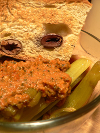

Braised celery

It’s the end of the week, I’m going to Pittsburgh this weekend, and there is nothing to eat in my apartment. I made a good tomato sauce last night with green chard and pancetta in it, and other than that, there wasn’t much in the fridge other than four stalks of celery, a bunch of rosemary, two slices of pancetta, and some crème fraîche.
Braised celery has become one of my favorite sides recently, but only when I have time to make it. Celery is a tough bastard, and it needs a solid ninety minutes to reach mushy deliciousness. I sautéed these sad stalks in hazelnut butter, added rosemary and the pancetta, poured in some wine, and gave them about an hour over low heat with the lid on. I knew they weren’t ready, but it was 9 p.m. and we couldn’t wait forever. With a hunk of toasted olive bread and the leftover chard sauce (mixed with some crème fraîche), it made a fine dinner.
If you ever have time to make long-braised celery, do it. I like to brown old celery in a bit of oil or butter with a diced onion before pouring in stock or wine. I add garlic, tomato, or whatever else is lying around, and then I just cook it until it offers no resistance to a wooden spoon. The fibers give up, and it’s luscious.
But now I’m looking at Markie Mark’s recipe for braised celery, and he says to “cover and cook until the celery is very tender, 10 to 15 minutes.” Am I using a different celery? Otherwise our steps are similar: sauté, boil, simmer, cover, wait. How does he finish in ten minutes when I need 75 or more? Cutting it into two-inch pieces wouldn’t make that much of a difference. Would it?
Comments
Hmmm, I’m plumbing the lower depths of my memory here, but I think once in awhile we used to braise celery hearts at the Watergate, otherwise I have never done it myself. I’m pretty sure red wine was involved – would something acidic break them down more quickly? And do you peel your celery? Because I’m sure if you did it would cook much faster. That’s one thing I learned at the Watergate – to peel celery, and I still do it, for absolutely everything I use celery for except possibly soup stock. I peel asparagus, too.
It sounds delicious, though, and it’s funny you should be writing about this because I was just replacing my celery this week and thinking that I wished I could buy just half a bunch because with our small family I often wind up throwing wilting, rotten celery away.
Aw, man! I haven’t visited here in a while and look at all the delicious things I’ve missed. Paprika chicken, apple cake, and a delicious way to use up the celery in my fridge. I won’t stay away this long again!
Add a comment